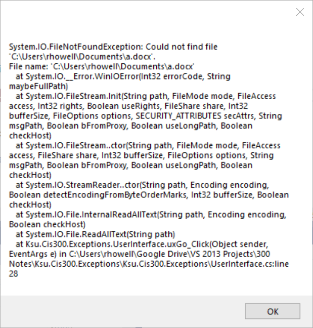

Exception Handling
As was mentioned in the previous section, various problems can occur when doing file I/O. Some of these problems include:
- Trying to write to a read-only file.
- Trying to access a file that is locked by another process.
- Accessing an external drive that becomes disconnected.
Note that some of these issues are beyond the programmer’s control, while others may be tedious for the programmer to check. When one of these problems prevents an I/O operation from completing successfully, an exception is thrown. This section discusses how to handle such exceptions gracefully, without terminating the program.
File dialogs can be quite helpful in avoiding some of these exceptions, as they can reject improper selections by the user.
The mechanism used to handle exceptions is the try-catch construct. In its simplest form, it looks like:
try
{
// Block of code that might throw an exception
}
catch
{
// Code to handle the exception
}
If we are concerned about exceptions thrown while doing I/O, we would include the I/O and anything dependent on it within the try-block. If at any point within this block an exception is thrown, control immediately jumps to the catch-block. Here, we would place code to handle the exception - for example, displaying a message to the user.
Suppose, for example, that we want to count the number of upper-case
letters in a file whose name is in the string referenced by
fileName. We could use the following code:
try
{
string contents = File.ReadAllText(fileName);
int count = 0;
foreach (char c in contents)
{
if (Char.IsUpper(c))
{
count++;
}
}
MessageBox.Show("The file contains " + count + " upper-case letters.");
}
catch
{
MessageBox.Show("An exception occurred.");
}
See the section, “ The foreach Statement” for an explanation of foreach loops. The Char.IsUpper method returns a bool indicating whether the given char is an upper-case letter in some alphabet.
We should always include within the try-block all of the code that depends on what we want to read. Consider what would happen, for example, if we tried to move the statement,
MessageBox.Show("The file contains " + count + " upper-case letters.");
outside the try-catch. First, we would have a syntax error
because the variable count is declared with the try-block, and
hence cannot be used outside of it. We could fix this error by declaring
and initializing count prior to the try statement. The resulting
code would compile and run, but consider what happens if an exception is
thrown during the reading of the file. Control immediately jumps to the
catch-block, where the message, “An exception occurred.”, is
displayed. After that, assuming we have made these changes to the above
code, control continues on past the catch-block to the code to
display the results. Because the file was not successfully read, it
really doesn’t make any sense to do this. The code given above, however,
displays a result only if the result is successfully computed;
otherwise, the exception message is displayed.
In the above example, the message, “An exception occurred.”, isn’t very helpful to the user. It gives no indication of what the problem is. In order to be able to provide more information to the user, we need more information regarding the nature of the exception. The way we do this is to use some additional code on the catch statement:
catch (Exception ex)
The word Exception above is a type. Every exception in C# is a
subtype of the Exception class. In this form of the catch
statement, we can include any subtype of Exception, including
Exception itself, as the first word within the parentheses. The
second word is a new variable name. One effect of this parenthesized
part is to declare this variable to be of the given type; i.e., ex is
of type Exception, and may be used within the catch block.
This form of the catch statement will catch any exception that can be treated as the given type. If we use the type, Exception, as above, the catch-block will still catch any exception. In addition, the variable defined within the parentheses will refer to that exception. Thus, the parenthesized part of this statement behaves much like a parameter list, giving us access to the exception that was thrown. Having the exception available to examine, we can now give more meaningful feedback to the user. One rather crude way of doing this is to use the exception’s ToString method to convert it to a string representation, which can then be displayed to the user; for example,
catch (Exception ex)
{
MessageBox.Show(ex.ToString());
}
Replacing the catch-block in the earler example with this catch-block might result in the following message:

While this message is not something we would want to show to an end user, it does provide helpful debugging information, such as the exception thrown and the line that threw the exception.
Every object in C# has a ToString method. Hence, we can convert an instance of any type to string by using its ToString method. This method will always return a string, but depending on the original type, this string may or may not be useful. For example, because there is no particularly meaningful way to convert a Form to a string, its ToString method is not especially useful.
A single try-block can have more than one catch-block. In such a case, whenever an exception occurs within the try-block, control is transferred to the first catch-block that can catch that particular exception. For example, we can set up the following construct:
try
{
// Code that may throw an exception
}
catch (DirectoryNotFoundException ex)
{
// Code to handle a DirectoryNotFoundException
}
catch (FileNotFoundException ex)
{
// Code to handle a FileNotFoundException
}
catch (Exception ex)
{
// Code to handle any other exception
}
If we don’t need access to the exception itself in order to handle it,
but only need to know what kind of exception it is, we can leave off the
variable name in the catch statement. For example, if we are trying
to read from a file whose name is referenced by the string
fileName, we might handle a FileNotFoundException as follows:
catch (FileNotFoundException)
{
MessageBox.Show("Could not find the file " + fileName);
}
Don’t use exception handling (i.e., try-catch) to handle cases that are expected to occur under normal conditions. In such cases, use an if-statement instead. Not only is this better style, but it is also more efficient.